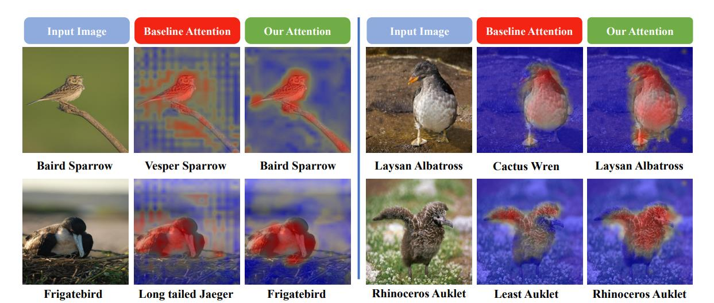
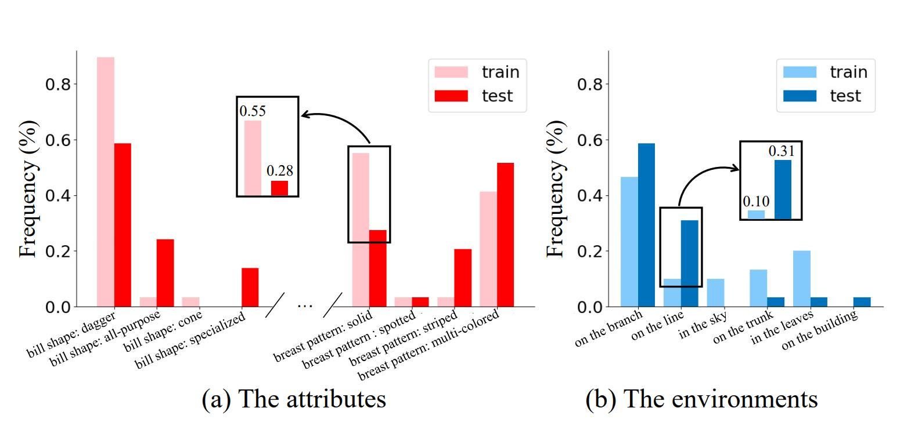
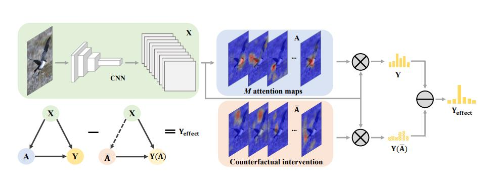
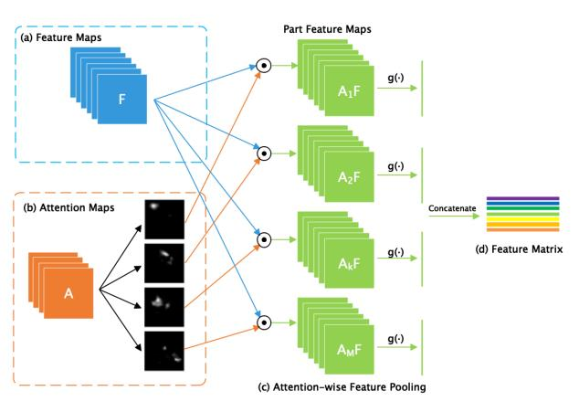
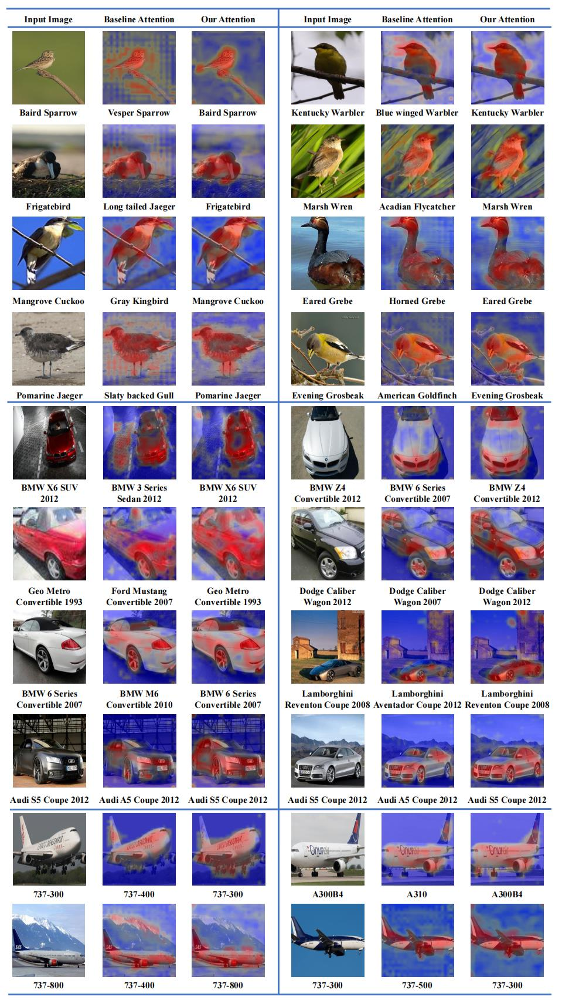
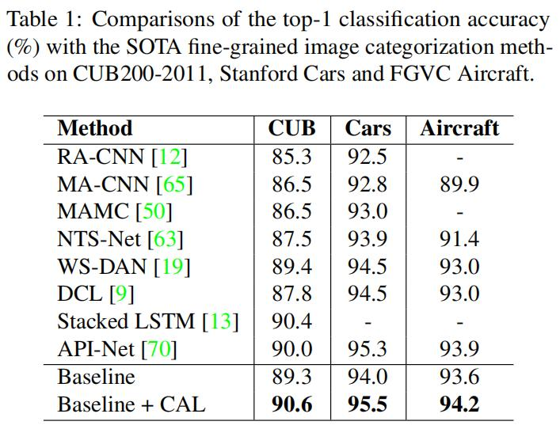

细粒度：CAL¶
综述¶
会议时间：IEEE International Conference on Computer Vision 2021 (ICCV, 2021)
源码地址(PyTorch版本)：https://github.com/raoyongming/CAL
针对领域：细粒度图像分类(FGVC)、行人重识别
主要思想¶
注意力是人类视觉感知最基本的机制之一，面对复杂的场景时，人类能够选择感兴趣的区域，并且利用注意力来缩小搜索范围和加快识别速度。现有的研究中，有很多方法来模拟计算机视觉中人类的注意力机制，通过发现有区别的区域来促进高性能的识别，并且减轻由不同因素带来的负面影响(如杂乱的背景、遮挡、姿态不一致等等)。由于细微的差异是区分子类别的关键，因此注意力机制在细粒度分类中具有重要的应用。
虽然当前已经研究出了多种基于注意力机制的细粒度分类算法，但是如何学习有效的注意力几乎没有被研究过。现有的基于弱监督的注意力学习方法中，注意力模块的优化往往是简单地利用最后的预测损失，在训练过程中缺少一个有效的监督信号。这种基于似然性的方法仅仅监督最后的预测(如在分类任务中，仅仅要求最后预测的类别概率向标签靠拢)，忽略了最终的预测和注意力之间的因果关系。并且以前的方法也没有教机器去区分主要线索和偏差线索，例如，一个特定的类别中大部分样本都是以天空为背景，那么注意力模型也许会认为天空有区别性的区域。虽然这些偏差注意力可能也会对当前数据集的分类有利，但是注意力模型应该只关注有区别的模式，即关注主要线索。另外，直接从数据中学习或许会鼓励模型只关注物体的某些属性而不是所有的属性，这限制了模型在测试集上的泛化能力。因此，作者认为这种注意力学习方案是次优的，因为所学的注意力并不能得到保障，并且注意力可能缺乏辨别能力、明确的意义以及鲁棒性。如下图所示，训练好的注意力模型(基线注意力)仍可能会产生误导、分散的注意力，并且可能会导致错误的分类。

为了更好地理解这种现象，作者分析了CUB数据集中的内部属性和外部环境的统计数据，具体如下图所示。作者使用了数据集提供的属性并且手动收集环境的统计数据，从图中可以看到属性和环境都有偏差，训练集中占比高的属性(或环境)在测试集中不一定占比高。这表明背景和单个部件都不是可靠的分类线索，因此需要设计一种超越传统似然最大化的新注意力学习方法来减轻数据偏差的影响。

上图中，作者以环纹翠鸟(Ringed Kingfisher)为例，统计了不同属性与不同环境出现的频率，来验证训练集和验证集的偏差现象。
由于缺乏有效的注意力评估工具，因此纠正错误的注意力是一项具有挑战性的任务。一个直接的方法就是使用额外的标注框或者语义掩模去明确的获得感兴趣的区域，但这种方法需要大量的人力标注，很难扩大规模。
本文中，作者提出了一种基于因果推理的反事实注意力学习方法(counterfactual attention learning, CAL)来增强注意力的学习。具体的来说，作者设计了一个工具来分析具有反事实因果关系的习得性视觉注意力(learned visual attention)，基本的思想是通过对比事实(学习得到的注意力)和反事实(未校正的注意力)对最终预测的影响来量化(评估)注意力的质量。然后，通过最大化二者的不同来鼓励网络去学习更有效的视觉注意力，并且在训练过程中降低数据集的偏差影响。
作者提出的框架具有非常广泛的应用性，可以作为即插即用(plug-and-play)模块来改进大部分的视觉注意力模型，在训练过程中仅引入少量的额外计算成本，并且在测试过程中不引人额外的计算成本。
方法¶
网络结构¶
首先选用一种带有注意力机制的基线模型，如下图所示，原图经过特征提取得到特征图X，之后经过注意力模型生成注意力图A，之后注意力图与特征图相乘(如下图第一行)，用于得到最终的分类Y。作者设计了一种容易嵌入到大部分注意力机制模型中的框架，对于原始注意力图像，相应地生成一些随机注意力图\overline{A}，通过将该随机注意力图与特征图做乘积(如下图第二行)，达到一个反事实干预的效果，得到反事实分类Y(\overline{A})，之后Y与Y(\overline{A})做差，从而分析注意力图的视觉效果(评估注意力图的好坏)，最后再从训练过程中最大化二者差异。

细粒度分类中的注意力¶
首先回顾一下细粒度分类任务中基于注意力机制的网络模型，给一个输出图像I以及相应的特征图X=f(I)，特征图尺寸为H\times W\times C。视觉空间注意力模型(visual spatial attention model) \mathcal M通过结合物体的结构知识来发现有区分度的区域并且改进特征图X。目前有很多方法去构造\mathcal M，作者大致将他们分为了两类：①学习”硬”注意力图，每个注意力都可以表示为一个边界框或者语义分割掩模，通过某些方法将感兴趣的区域标注出来，然后进一步学习该区域的特定信息。这组方法通常与目标检测或语义分割的方法相关。例如：RA-CNN(论文笔记)、FCAN(论文)等等。②学习”软”注意力图，这种方法应用更广泛，并且更容易优化。在本文中，作者的研究主要基于学习软注意力图的方法，例如：WS-DAN(论文笔记)、MA-CNN(论文)、MAMC(论文)，在本研究的实验中，作者采用的基线模型(baseline model)为WS-DAN。
注意力模型用于学习物体部件(也叫物体零件)的空间分布，即学习图片中哪里是分类的关键，哪些区域是该类别中”独一无二”的区域，可以将其表示为注意力图A\in \mathbb R^{H\times W\times M}_+，其中，M表示注意力的数量，注意力图的计算可表示为：
下图为WS-DAN中注意力模块的网络结构图，在论文中被称为双线性注意力池化模块(Bilinear Attention Pooling)，其中，特征图(Features Maps)对应本文中的X，注意力图(Attention Maps)对应本文中的A。首先特征图与注意力图两两做点乘，如下图所示，A_i与所有的特征图做点乘，得到A_iF，最后一共会得到M组部件特征图(Part Feature Maps)，分别对应M张注意力图。之后经过全局平均池化操作，得到部件特征向量，对应本文中的h_i，最后经过合并得到特征矩阵，对应本文中的h，感兴趣的可以看一下《WS-DAN论文笔记》。

因果图中的注意力模型¶
在介绍反事实方法之前，先介绍一下如何使用因果图的语言重构上述注意力模型。因果图也称为结构因果模型，可以用一个有向无环图\mathcal {G=\{N, E\}}表示，模型中每个变量都对应一个节点\mathcal N，其中，因果联系\mathcal E描述了变量之间的相互作用。如CAL结构图所示(第一个图)，我们可以使用因果图中的节点来表示注意力模型，其中特征图(或输入的图片)为X，学习到的注意力图为A，最后的预测概率为Y。X\rightarrow A表示输入特征图，生成注意力图。(X, A)\rightarrow Y表示特征图和注意力图共同决定最终的预测。节点之间的因果联系被编码在联系\mathcal E中，我们称节点X是节点A的父因果(causal parent)，Y是X和A的子因果(causal child)。注意，作者并没有对主干网络和注意力模型添加任何约束，因此该因果图也可以表示其他注意力模型，即可以扩展到更广泛的注意力学习问题中。
反事实注意力学习¶
反事实注意力干预：
传统的模型优化策略仅通过监督最终的预测Y来优化注意力，并且将模型视为一个”黑盒”，忽略了所学的注意力图对最终预测的影响。相反，因果推理方法通过分析变量之间的因果关系，提供了一种帮助我们跳出”黑盒思想”的工具。因此，作者提出了一种利用因果关系来衡量所学注意力质量的方法，并且鼓励网络提供更有效的注意力图从而改进模型。
通过引入因果图，我们可以直接地操纵几个变量的值并且观察效果来分析因果关系，该操作在因果推理文献中被称为干预(intervention)，可以将其命名为do(·)。当我们想要研究变量的影响时，干预操作可以清除变量的所有输入联系(in-coming links)并且为变量重新赋值。例如，在我们的因果图中，do(A=\overline{A})表示利用数值\overline{A}来代替变量A，并且切断X\rightarrow A之间的联系，从而迫使该变量不再由父因果X引起(X不再影响该变量的变化)。
本文中，作者采用反事实干预(counterfactual intervention)来研究所学视觉注意力的效果。作者构造了干预do(A=\overline{A})，通过假象一个不存在的注意力图\overline{A}来替代原来学到的注意力图，并且保持特征图不变。可以进一步得到注意力图被干预之后的最终预测Y为：
- 随机注意力：使用随机生成的注意力图当做反事实注意力图，注意力图的数据分布服从均匀分布\mathcal U(0,2)；
- 均匀注意力：首先计算真实注意力图数据的平均值，之后利用该值填充原注意力图，即生成一张值唯一的图；
- 反转注意力：通过将原注意力图减去该注意力图上的最大值，来反转注意力的关注区域；
- 打乱注意力：沿批次(batch)维度随机打乱注意力图。
实验证明，随机注意力和打乱注意力效果较好。
评估注意力效果：
所学注意力在实际预测中的效果可以被表示为两个预测的差异，即通过计算注意力观测得到的预测Y(A=\mathbf A,X=\mathbf X)与对应的反事实选择得到的预测Y(do(A=\overline{A}),X=\mathbf X)之间的距离，来评估所学注意力图的质量效果：
损失优化：
得到注意力图效果的质量评估之后，我们就可以使用注意力的质量作为监督信号，来明确地指导注意力的学习过程：
实验¶
可视化¶
为了更好地理解反事实注意力学习方法，作者对比了基线模型得到的注意力图和引入了CAL的模型得到的注意力图。如下图所示，作者提出的方法通过①减少误导注意力和分散注意力②鼓励模型关注分类的主要线索并且探索更多有区分度的区域，来帮助模型做出正确预测。

精度对比¶

总结¶
在本文中，作者提出了一种基于因果推理的反事实注意力学习方法，可以让网络学到更有效的注意力。通过比较事实注意力和反事实注意力对最终的影响来评估注意力的质量，同时最大化二者的差异来鼓励网络学习更有效的视觉注意力。CAL仅在训练过程中引入了可忽略的额外计算成本，在测试过程中不会引入任何计算成本，并且该方法是一个与模型无关的框架，可以轻松地嵌入到大部分的注意力机制中，用于增强注意力的学习和减轻数据集偏差的影响，适用于各种细粒度的视觉识别任务。
注：以上仅是笔者的个人观点，若有错误，欢迎大家批评指正。
最后一次修改日期：2021年12月25日